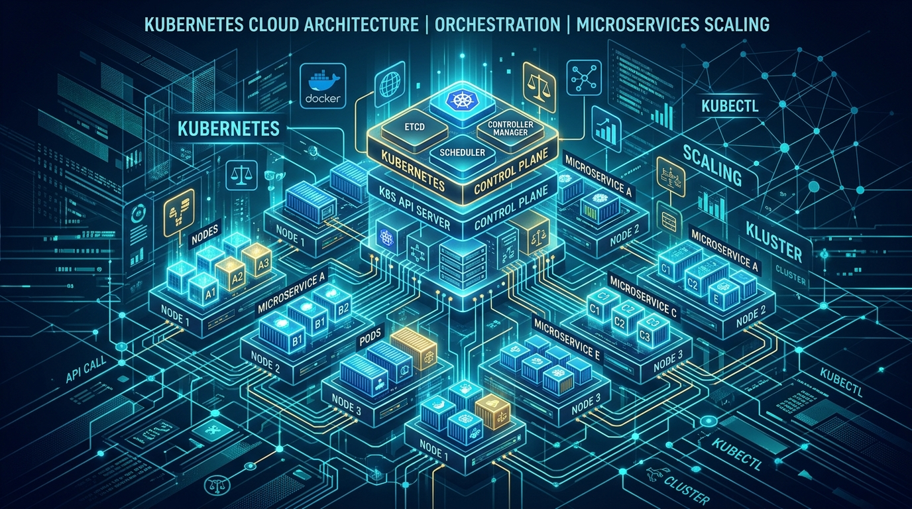
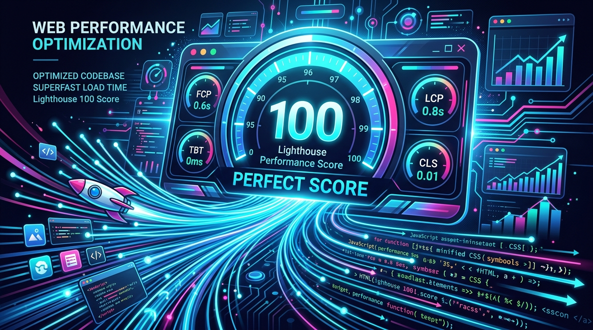
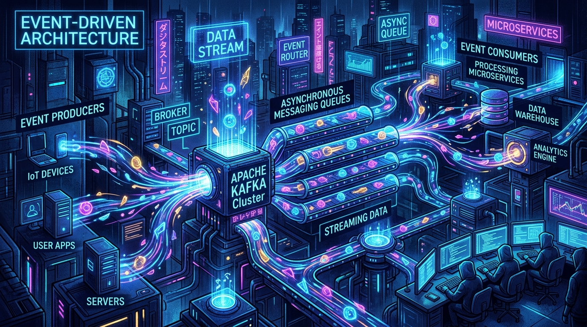

Architecting Zero-Downtime Deployments with Kubernetes and Canary Releases
A step-by-step guide to progressive delivery, Prometheus SLI metric validation, and automated rollback heuristics.
Transforming complex engineering challenges into high-concurrency microservices, resilient cloud architectures, and pixel-perfect reactive web applications. 7+ years of delivering scalable digital products.
A blend of architectural engineering, hands-on fullstack execution, and team leadership to turn complex requirements into high-value solutions.
Senior Full Stack & Cloud Architect
Algorithmic precision & low-latency execution
Microservices, Kafka events & cloud native
LEAN methodologies, CI/CD & sub-second loads
Cross-functional mentoring & agile delivery
Leading distributed architecture across Next.js, Node.js, and AWS for mission-critical SaaS serving over 150,000 active enterprise users. Mentoring a squad of 14 senior engineers.
Architected real-time order matching microservices with FastAPI and Redis, cutting order turnaround to under 1.2ms. Modernized core web apps with React and TypeScript.
Designed responsive dashboards, automated continuous integration pipelines with GitHub Actions, and reduced database indexing latency by 40% on PostgreSQL.
Maintained enterprise web systems, created automated reporting modules, and standardized ITIL service workflows.
Focused on Distributed Systems, Advanced Algorithms, Database Management Systems, and Cloud Computing. Graduated with Academic Excellence Award (GPA: 3.9/4.0).
Published research paper on high-throughput distributed caching algorithms and fault-tolerant consensus mechanisms.
Mastery in designing distributed multi-region systems, hybrid cloud interconnects, and resilient auto-scaling infrastructure on AWS.
Validated expertise in cluster architecture, container networking, ingress controllers, persistent volumes, and zero-downtime maintenance.
Demonstrated leadership in end-to-end fullstack development, UX design principles, and automated performance testing.
A full-spectrum engineering toolkit covering modern frontend frameworks, distributed backends, cloud databases, and DevOps orchestration.
Real-world production systems showcasing full-stack precision, distributed microservices, low-latency APIs, and modern responsive UI.
Track record of architecting mission-critical platforms, leading high-performance engineering teams, and optimizing bottom-line metrics.
Writing on distributed systems, zero-downtime deployments, modern web performance, and software engineering leadership.

A step-by-step guide to progressive delivery, Prometheus SLI metric validation, and automated rollback heuristics.

Deep dive into sub-second LCP, eliminating INP latency, and eliminating layout shifts with modern CSS features.

Architectural strategies for asynchronous domain events, outbox patterns, and distributed Sagas at scale.
Have an ambitious project, technical challenge, or leadership opportunity? Send a message and let's discuss.
I prioritize responsive communication and typically respond within 12-24 hours.
Bengaluru, India (Available for Global Remote & Relocation)
IST (UTC+5:30) • Overlaps with US & European business hours